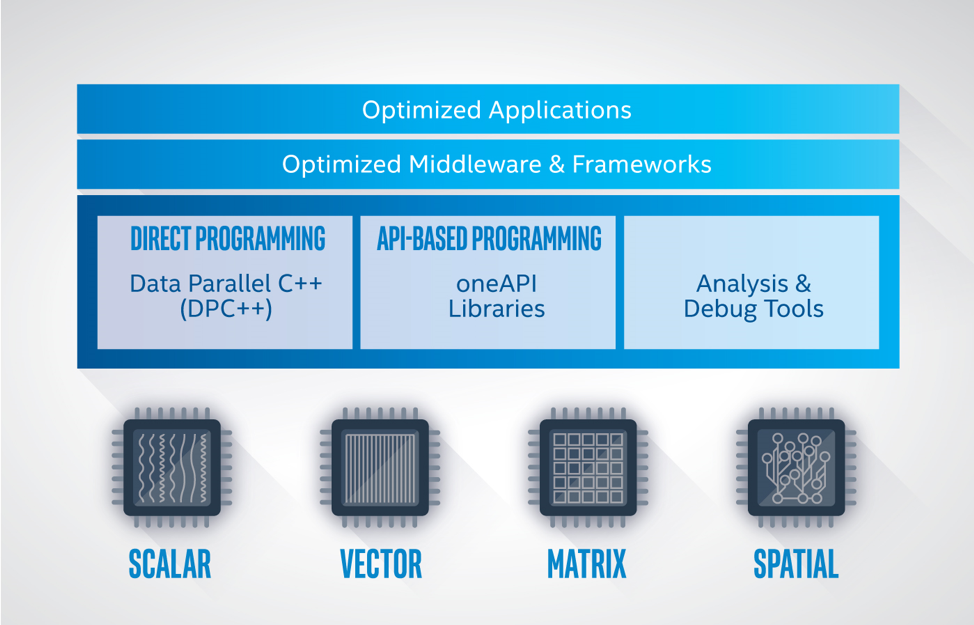

Software Architecture¶
oneAPI provides a common developer interface across a range of data parallel accelerators (see the figure below). Programmers use DPC++ for both API programming and direct programming. The capabilities of a oneAPI platform are determined by the Level Zero interface, which provides system software a common abstraction for a oneAPI device.
oneAPI Platform¶
A oneAPI platform is comprised of a host and a collection of devices. The host is typically a multi-core CPU, and the devices are one or more GPUs, FPGAs, and other accelerators. The processor serving as the host can also be targeted as a device by the software.
Each device has an associated command queue. A application that employs oneAPI runs on the host, following standard C++ execution semantics. To run a function object on a device, the application submits a command group containing the function object to the device’s queue. A function object contains a function definition together with associated variables. A function object submitted to a queue is also referred to as a data parallel kernel or simply a kernel.
The application running on the host and the functions running on the devices communicate through memory. oneAPI defines several mechanisms for sharing memory across the platform, depending on the capabilities of the devices:
Memory Sharing Mechanism |
Description |
|---|---|
Buffer objects |
An application can create buffer objects
to pass data to devices. A buffer is an
array of data. A command group will define
accessor objects to identify which
buffers are accessed in this call to the
device. The oneAPI runtime will ensure the
data in the buffer is accessible to the
function running on the device. The
buffer-accessor mechanism is available on
all oneAPI platforms
|
Unified addressing |
Unified addressing guarantees that the host and
all devices will share a unified address space.
Pointer values in the unified address space will
always refer to the same location in memory.
|
Unified shared memory |
Unified shared memory enables data to be shared
through pointers without using buffers and
accessors. There are several levels of support
for this feature, depending on the capabilities
of the underlying device.
|
The scheduler determines when a command group is run on a device. The following mechanisms are used to determine when a command group is ready to run.
If the buffer-accessor method is used, the command group is ready when the buffers are defined and copied to the device as necessary.
If an ordered queue is used for a device, the command group is ready as soon as the prior command groups in the queue are finished.
If unified shared memory is used, you must specify a set of event objects which the command group depends on, and the command group is ready when all of the events are completed.
The application on the host and the functions on the devices can synchronize through events, which are objects that can coordinate execution. If the buffer-accessor mechanism is used, the application and device can also synchronize through a host accessor, through the destruction of a buffer object, or through other more advanced mechanisms.
API Programming Example¶
API programming requires the programmer to specify the target device and the memory communication strategy. In the following example, we call the oneMKL matrix multiply routine, GEMM. We are writing in DPC++ and omitting irrelevant details.
We create a queue initialized with a gpu_selector to specify that we want the computation performed on a GPU, and we define buffers to hold the arrays allocated on the host. Compared to a standard C++ GEMM call, we add a parameter to specify the queue, and we replace the references to the arrays with references to the buffers that contain the arrays. Otherwise this is the standard GEMM C++ interface.
using namespace cl::sycl;
// declare host arrays
double *A = new double[M*N];
double *B = new double[N*P];
double *C = new double[M*P];
{
// Initializing the devices queue with a gpu_selector
queue q{gpu_selector()};
// Creating 1D buffers for matrices which are bound to host arrays
buffer<double, 1> a{A, range<1>{M*N}};
buffer<double, 1> b{B, range<1>{N*P}};
buffer<double, 1> c{C, range<1>{M*P}};
mkl::transpose nT = mkl::transpose::nontrans;
// Syntax
// void gemm(queue &exec_queue, transpose transa, transpose transb,
// int64_t m, int64_t n, int64_t k, T alpha,
// buffer<T,1> &a, int64_t lda,
// buffer<T,1> &b, int64_t ldb, T beta,
// buffer<T,1> &c, int64_t ldc);
// call gemm
mkl::blas::gemm(q, nT, nT, M, P, N, 1.0, a, M, b, N, 0.0, c, M);
}
// when we exit the block, the buffer destructor will write result back to C.
Direct Programming Example¶
With direct programming, we specify the target device and the memory communication strategy, as we do for API programming. In addition, we must define and submit a command group to perform the computation. In the following example, we write a simple data parallel matrix multiply. We are writing in DPC++ and omitting irrelevant details.
We create a queue initialized with a gpu_selector to specify that the
command group should run on the GPU, and we define buffers to hold the
arrays allocated on the host. We then submit the command group to the
queue to perform the computation. The command group defines accessors
to specify we are reading arrays A and B and writing to C. We then
write a C++ lambda to create a function object that computes one
element of the resulting matrix multiply. We specify this function
object as a parameter to a parallel_for which maps the
function across the arrays A and B in parallel. When
we leave the scope, the destructor for the buffer object holding
C writes the data back to the host array.
using namespace cl::sycl;
// declare host arrays
double *Ahost = new double[M*N];
double *Bhost = new double[N*P];
double *Chost = new double[M*P];
{
// Initializing the devices queue with a gpu_selector
queue q{gpu_selector()};
// Creating 2D buffers for matrices which are bound to host arrays
buffer<double, 2> a{Ahost, range<2>{M,N}};
buffer<double, 2> b{Bhost, range<2>{N,P}};
buffer<double, 2> c{Chost, range<2>{M,P}};
// Submitting command group to queue to compute matrix c=a*b
q.submit([&](handler &h){
// Read from a and b, write to c
auto A = a.get_access<access::mode::read>(h);
auto B = b.get_access<access::mode::read>(h);
auto C = c.get_access<access::mode::write>(h);
int WidthA = a.get_range()[1];
// Executing kernel
h.parallel_for<class MatrixMult>(range<2>{M, P}, [=](id<2> index){
int row = index[0];
int col = index[1];
// Compute the result of one element in c
double sum = 0.0;
for (int i = 0; i < WidthA; i++) {
sum += A[row][i] * B[i][col];
}
C[index] = sum;
});
});
}
// when we exit the block, the buffer destructor will write result back to C.